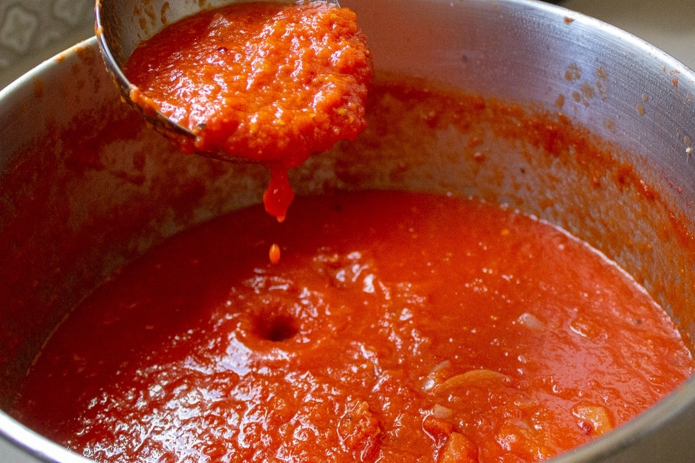

Tomato Sauce

San Marzano Tomato Sauce
Using the best tomatoes you can buy is a crutial part of making the best tomato sauce.
Ingredients:
- 2 kg San Marzano tomatoes, peeled
- Olive oil
- 3-4 Garlic cloves
- Salt and Pepper
Steps
- Sautee thinly sliced garlic in olive oil for a minute.
- Add crushed tomatoes.
- Salt and pepper to taste.
- Cook for 20 minutes on high heat.
- Enjoy!